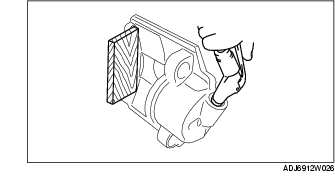

Caliper (front) disassembly/assembly
1. Disassemble in the order indicated in the table.

|
1
|
Bleeder cap, bleeder screw
|
|
2
|
Piston
(See Piston Disassembly Note)
(See Piston Assembly Note)
|
|
3
|
Dust seal
(See Dust Seal Assembly Note)
|
|
4
|
Piston seal
|
|
5
|
Caliper body
|
2. Assemble in the reverse order of disassembly.
Piston Disassembly Note
- • The piston could be damaged if blown out with great force. Blow the compressed air slowly to prevent the piston from suddenly popping out.
1. Place a piece of wood in the caliper, then blow compressed air through the hole to force the piston out of the caliper.

Dust Seal Assembly Note
1. Assemble a new dust seal to the caliper using the SSTs and a press with a press-in force of 834 N {85 kgf, 187 in·lbf}.

2. Verify that there is no gap between the dust seal and caliper body.
Piston Assembly Note
1. Press the piston into the dust seal opening as shown in the figure.

2. Insert a piece of wood between the caliper body and the piston, and while supporting the piston by hand, blow compressed air through the brake hose installation hole.

- • When blowing compressed air into the caliper body, the piston may pop out and cause injury if not supported at the correct point. Securely support the piston friction surface by hand when blowing compressed air.
3. Verify that the dust seal lip covers the piston end as shown in the figure.

4. Press the piston into the caliper body completely.